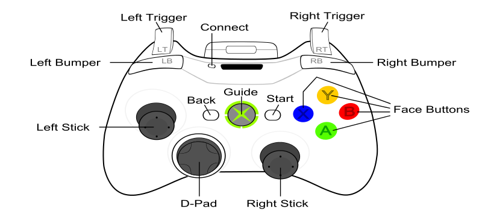

| Available since LÖVE 0.9.0
|
| This enum is not supported in earlier versions.
|
Virtual gamepad buttons.
Constants
- a
- Bottom face button (A).
- b
- Right face button (B).
- x
- Left face button (X).
- y
- Top face button (Y).
- back
- Back button.
- guide
- Guide button.
- start
- Start button.
- leftstick
- Left stick click button.
- rightstick
- Right stick click button.
- leftshoulder
- Left bumper.
- rightshoulder
- Right bumper.
- dpup
- D-pad up.
- dpdown
- D-pad down.
- dpleft
- D-pad left.
- dpright
- D-pad right.
Notes
The physical locations of the virtual gamepad buttons for a Joystick correspond as closely as possible to the layout of the buttons on a standard Xbox 360 controller.

See Also